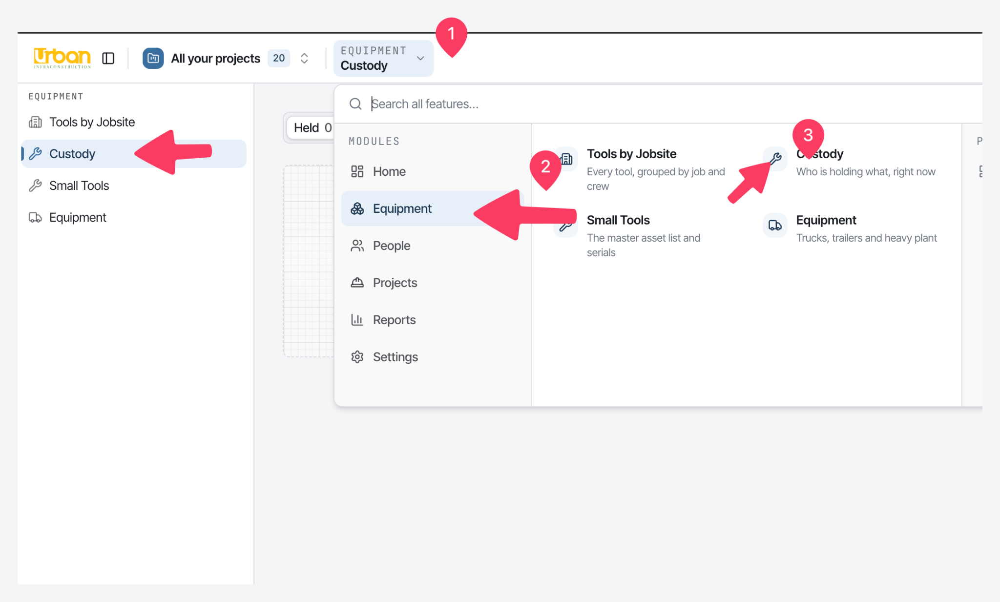
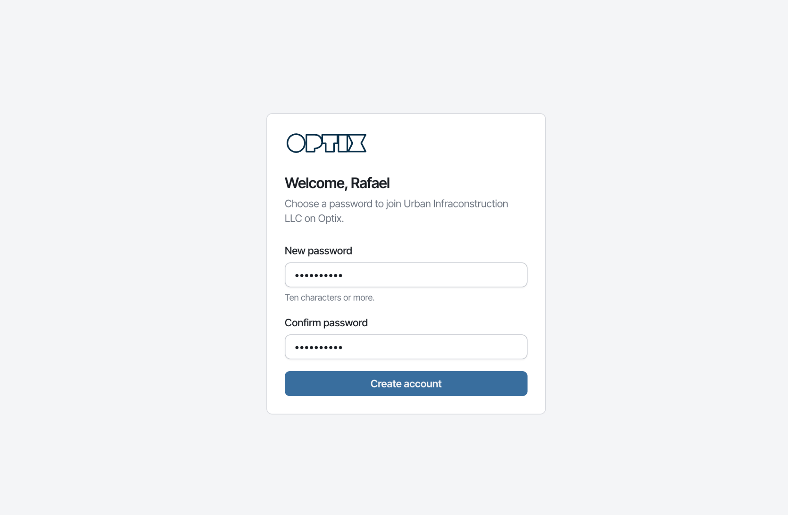
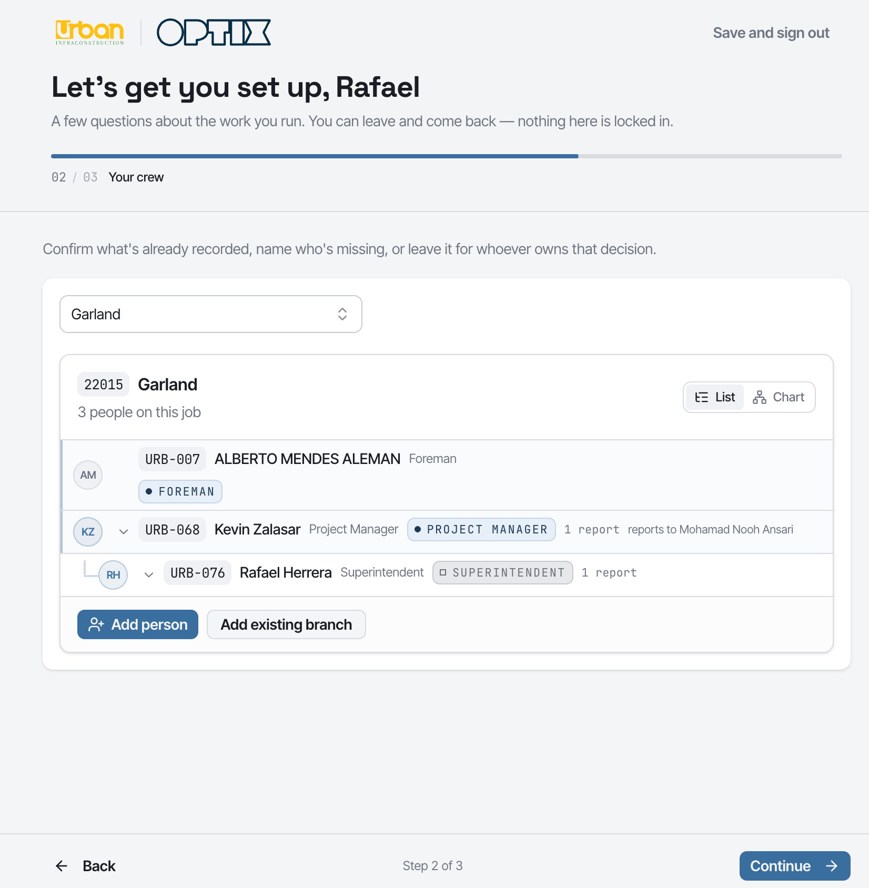
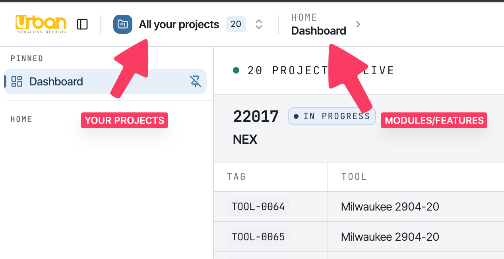
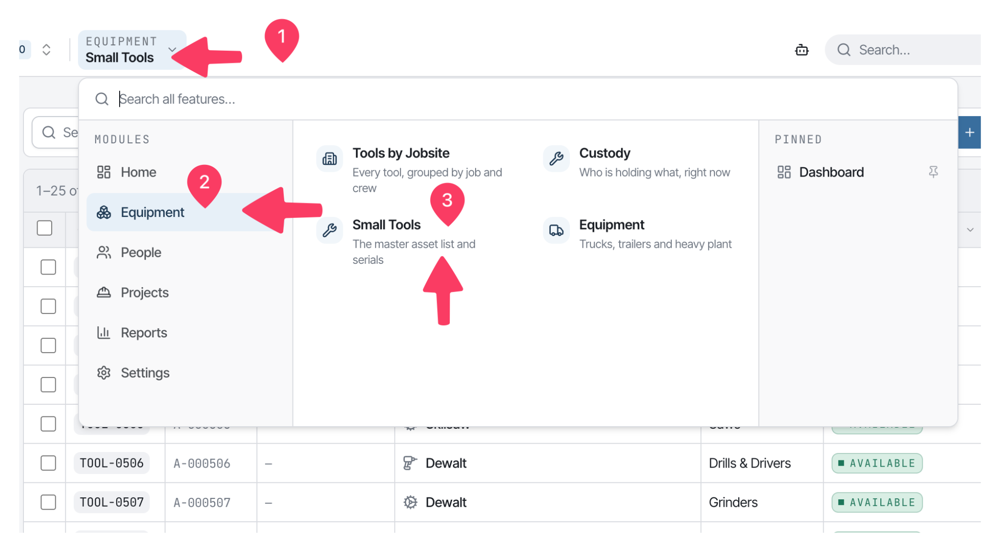
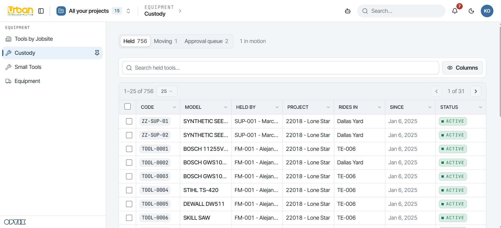
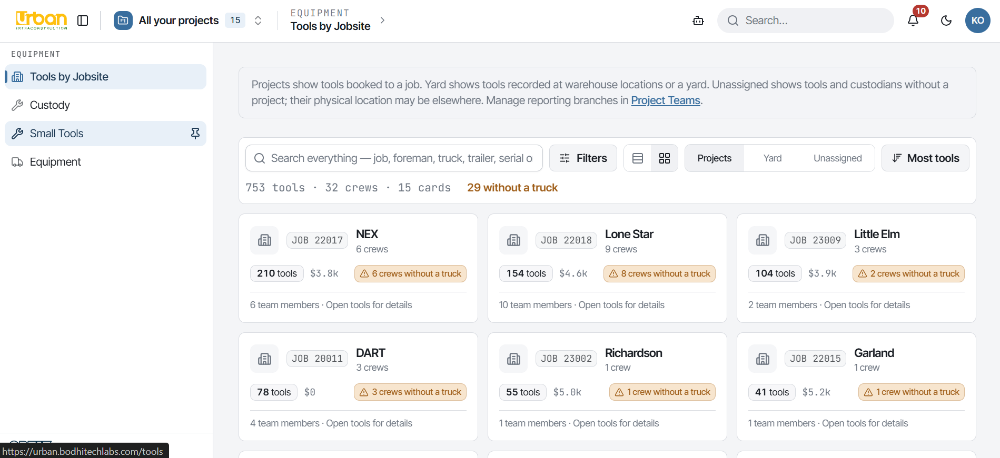
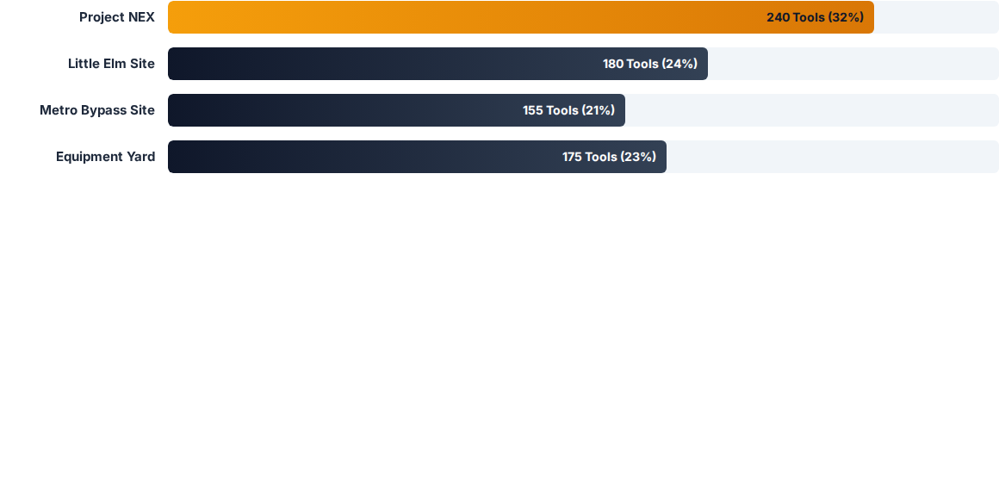

Awakening what's possible
Optix
Small Tools Inventory Management
Built for Urban Infraconstruction LLC — one trustworthy answer to where every small tool is, and who is holding it.
Agenda
From mission to daily work
Mission & Goals
Why Optix exists, and the outcomes it has to prove on Urban's jobs.
How Optix Works
One ledger, one writer: how a tool moves, and how its location is calculated.
Field & Desk
Two layouts — a foreman's phone, and the equipment desk's full working surface.
Screens & Features
Register, custody, tools by jobsite, reports and the audit trail.
Roles & Screens
Who sees what: each role mapped to the screens it gets and what it may do.
Doing the Work
The four moves that cover almost all of the day-to-day work.
Why this exists
The problem today
Tool custody is a memory game played across twenty jobs, dozens of crews and a yard — and memory does not reconcile.
Capital waste
Tools that cannot be located get re-purchased. The company pays twice for the same drill because nobody can say who has it.
Idle downtime
Crews hunting for equipment burn labour at site rates. A missing grinder is a stopped job, not a small inconvenience.
Offboarding gaps
Departing workers leave without a systematic check on what they hold — so assets leave quietly with them.
Mission
Know where every small tool is, and who is holding it — at all times, without a phone call to the yard.
Six goals follow from that one sentence. They are the test every screen is held to.
One register of record
Every tool Urban owns, in one list — not a spreadsheet per department.
Live custody
Who is holding what, right now, folded from a ledger rather than typed in.
Field-first by phone
A foreman works from a phone, in the yard, in one sentence.
Tools follow the foreman
When a person moves job, the tools in their hands move with them — on the record.
Real data from real sources
Populated from HR and Urban's own files. Nothing invented.
Access that matches the job
People see what their job needs — and cannot act beyond it.
Scope
Deliberately not built
A register that guesses is worse than one that admits what it does not know. Each of these was removed or never built, on purpose:
Rentals & loans
No rented-tool tracking, and no loan model with due dates. Neither is a custody fact Urban asked to manage.
Overdue & reminders
The borrow model and expected-return dates were deleted. Nothing goes "overdue" because nothing is borrowed.
Foreman-to-foreman hand-offs
A foreman cannot pass a tool to another foreman. Tools move through the equipment desk, or not at all.
Vendors, POs, cost codes
Purchasing documents and job-cost accounting are not this system's job.
Money on the field screen
Capital figures are desk reports. A foreman's screen does not carry dollars.
What is in scope
One register of small tools, custody of them, who holds what on which job — and the history of every move.
How Optix works
One ledger, one writer
Custody is event-sourced. The transaction ledger is the system of record; what a tool "currently" is, is only a projection of that ledger.
- One writer. A single custody module is the only thing that may write custody — no screen writes a holder directly.
- Corrections are events. Fixing a mistake logs a correction; history is never deleted.
- Every screen is a projection. If a screen and the ledger disagree, the ledger is right and the screen is a bug.
How Optix works
The custody lifecycle
Tag & register
A tool enters the register and gets a tool ID. A tag is optional until somebody labels it.
Assign to a custodian
Issued by the equipment desk and charged to a project. Custody is now on a person.
Reassign
The desk moves custody to another custodian or job. High-value tools need a second approver.
Yard return
Cleared back to the desk, or reassigned straight to the next job. The tool is available again.
The surface
Everything is reachable in two clicks
A searchable feature launcher sits over every screen — modules, then the screens inside them.

How Optix works
Two layouts: field and desk
Give each person the surface their job needs — not the full app with two thirds greyed out.
Field layout
Foreman · Superintendent · Mechanic
- Built for a phone, standing in a yard: My Tools, Hand Off, Alerts, My Crew's Setup.
- A foreman sees only what he is holding; a superintendent sees his foremen's tools as well as his own.
- No registers, no settings, no navigation to learn — the three things the job actually needs.
Desk layout
Equipment desk · PM · Leadership · Office
- The equipment desk runs the operation: Tools by Jobsite, Custody, the registers, People, Crews, Projects.
- Reports and the audit trail live here — the strongest surface in the product, gated per role.
- Which layout a role gets is a setting on the role, not a hardcoded list of names.
Getting started
Getting in, then getting set up
An invited account chooses its own password. What happens next depends on the role: an equipment wizard, a people wizard, or straight to work.
- Nobody is issued a shared password.
- Setup is resumable — you can leave and come back; nothing is locked in.
- The wizard records what the system needs to scope your work: your crew and your jobs.

Getting started
Your crew, confirmed — not typed
Setup shows what the system already believes about your job and crew, and asks you to confirm or correct it.
- Each person carries a code and a job tier — foreman, superintendent, PM.
- Reports-to links are made here, which is what the org chart later reads.
- These rows are what give a superintendent crew scope on the job.

Getting started
One job, all jobs, or a group you create
- You can be assigned to several jobs.
- Every screen can be read for a single job, for all of them at once, or for a saved group.
- The dashboard cycles one job at a time — the board you leave on a wall.

Feature
Small Tools register
- One list for every small tool Urban owns — make, model, serial and current holder.
- Tag & reference: a searchable code per tool; optional until somebody labels it.
- Categories that match the yard: Hand Tools, Saws, Drills, Grinders, Compaction, Power & Yard, Survey.
- Current holder: read from custody, never typed in.

Feature
Custody — who is holding what
- Ownership vs custody: who paid for a tool and who is holding it are tracked separately.
- Held: in the hands of a named foreman, superintendent or the shop.
- In transit: between jobs, or on its way back to the yard.
- Awaiting approval: a high-value move parked for a second sign-off.

Feature
Tools by jobsite
The control hub: one card per job, with its crews — foreman and truck or trailer — and the tools working it.

- Crew attribution: tools mapped to the foreman and crew holding them.
- Drill-down: from job, to crew, to an individual tool's serial.
- Rig: what a truck or trailer is carrying, and hand it over as one unit.
Feature
Where the fleet actually sits
Live deployment counts per job — the number that rebalances a fleet instead of re-buying it.

How Optix works
Tools follow the foreman
Person moves job
Moving somebody to a new job moves the tools in their hands with them — recorded, not remembered.
Container moves
A truck, trailer or gang box is handed over as a unit; its contents move with it by default.
Tool moves alone
For everything else, the equipment desk reassigns the individual tool to its new custodian and job.
Why it matters
Reassignment is what makes a rig true. Without it a trailer's contents are a guess the moment it drives away.
Feature
One sentence, no syntax
The field's whole interface with the desk is a chat box. A foreman describes what he is doing in plain words.
Plain language
"Handing the compactor to Jose on NEX." No codes, no dropdowns, no form to learn.
Every message resolves
Nothing is left in limbo: a message ends accepted, declined, or answered — never silently dropped.
The desk decides
A message is a request. Custody changes when the desk acts, so the ledger stays authoritative.
Reports & logs
Thirteen reports, one hub
| Report | Group | Answers |
|---|---|---|
| Asset Register | Inventory | Every tool owned, who holds it, where it is, which project paid |
| Assets by Project | Operations | What each job is holding right now — operational custody |
| Assets by Foreman | Operations | Custody per person. The offboarding conversation starts here |
| Assets by Mechanic | Operations | Shop custody, charged to a department rather than a job |
| Idle Assets | Utilization | Available and sitting — check before approving a purchase |
| Lost Assets | Exceptions | Missing, not yet found or written off, with last custodian |
| Needs a Tag | Exceptions | Tools nobody has labelled yet — the label-gun worklist |
| Capital by Project | Finance | What each project actually paid for, wherever it sits today |
| Capital by Department | Finance | Tools charged to a department rather than to a job |
| Capital Split | Charts | Projects versus departments, by acquisition cost |
| Fleet by Status | Charts | The fleet's current distribution across statuses |
| Movement Rate | Charts | Ledger writes per week — the register's heartbeat |
| Audit Trail | Logs | Every ledger write, searchable and paged |
Reports & logs
The immutable audit trail
Every movement is a timestamped event with its actor, asset and context. History is appended, never edited.
Timestamped
Date, time and actor captured for every custody change.
Correctable, not erasable
A mistake is fixed by a correction event. Nothing is deleted, so nothing is hidden.
Built for loss claims
Previous holder, new holder, job and time — enough for an internal audit or an insurance claim.
Roles & access
How access actually works
Three separate axes describe a person. Only one of them belongs on screen.
1 · HR job title
What payroll calls the post. Decides which login role a synced person arrives with.
2 · Login role
What an account may see and do. Set in Settings → Access Roles.
3 · Job tier
Where somebody sits on one project — foreman, superintendent, PM. Per project, never derived from a title.
Roles & screens
Who gets which layout
| Role | Layout | What that means in practice |
|---|---|---|
| foreman | Field | My Tools · Hand Off · Alerts · Settings → Appearance |
| superintendent | Field | The field set, plus My Crew's Setup |
| mechanic | Field | My Tools · Hand Off · Alerts (no crew screens) |
| warehouse | Desk | Tools by Jobsite · Custody · Small Tools · Equipment |
| equipment_admin | Desk | Every register and custody screen |
| project_manager · engineer | Desk | Registers and custody, scoped to their own jobs |
| director · area_in_charge · general_superintendent | Desk | Registers, People, Crews, Take on a job |
| office_admin | Desk | People · Projects · Settings (no custody) |
| hr · finance · procurement · read_only | Desk | Reports and register reads within their scope |
Layout is a per-role flag, editable in Settings → Access Roles. It decides which menu you get — never which data you may see.
Roles & screens
How far a role can see
The visibility ladder: all > project > crew > own. The first match wins, it is resolved on the server, and it is applied to the query — never as a filter after the fact.
| Scope | Roles | Sees |
|---|---|---|
| assets.view.all | owner · tech_admin · equipment_admin · warehouse · office_admin · finance · hr · procurement · read_only | Every tool in the tenant |
| assets.view.project | project_manager · engineer · director · area_in_charge · general_superintendent | Tools on the jobs they are on |
| assets.view.crew | superintendent | Their foremen's tools, plus their own |
| assets.view.own | foreman · mechanic | Only what is in their hands |
| — none — | crew (no login) | Nothing; they never sign in |
Roles & screens
What each role can do
| Role | Grants | Can | Cannot |
|---|---|---|---|
| owner · tech_admin · equipment_admin | all 35 | Everything, including configuration and custody | — |
| warehouse | 21 | The desk: issue, receive, reassign custody, assign tools | Platform configuration |
| office_admin | 18 | Manage users, people and projects | Any custody at all |
| superintendent | 15 | Approve assignments and transfers; assign and hand over on a job | Manage rig; place PMs or superintendents |
| foreman | 11 | See and report what he holds; read custody | Assign or transfer — by any route |
| mechanic | 10 | Hold and report shop tools | Crew screens (no project.team.read) |
| read_only | 8 | See every tool and its reports | Any write, anywhere |
| procurement | 6 | Read the register | Any write |
| hr | 6 | Manage people and the title → role mapping | Open the register (no asset.read) |
| finance | 6 | Read the full audit trail and reports | Move custody; see custody screens |
Grant counts are the seeded starting point for a fresh tenant; the three all-holders receive every permission as of provisioning day.
Roles & screens
The working surface — every screen, and what it needs
| Screen | Requires | What it is for |
|---|---|---|
| Dashboard | — | The jobsite board, cycling one job at a time |
| Tools by Jobsite | asset.read | Every tool, grouped by job and crew |
| Custody | assignment.read | Who is holding what, right now |
| Small Tools | asset.read | The master asset list and serials |
| Equipment | vehicle.read | Trucks, trailers and heavy plant |
| People | employee.read | Your crew and the roles they hold |
| Org Chart | project.team.read | Who answers to whom, on each job |
| Crews | project.team.read | Who answers to you, job by job |
| Take on a job | project.team.read | Record the jobs you run, so you can staff them |
| Onboarding | project.team.read | Who below you has set up their jobs and crew |
| Projects | project.read | Every job and job group on record |
| Reports & Logs | report.read | Every register and report in one place |
| Activity | asset.read | The live tool-movement feed |
Roles & screens
Settings — one page per concern
| Page | Requires | What it is for |
|---|---|---|
| Appearance | — | Your own theme, type and density — no permission at all, by design |
| General | config.manage | Branding, approvals and mail |
| Modules | config.manage | Which parts of the product this organisation uses |
| AI & API | config.manage | The chat parser's model and key |
| Access Roles | config.manage | What a signed-in account may see and do |
| Job Tiers | project.team.manage | The tiers a person can hold on a job — foreman, PM, superintendent |
| Job Titles | employee.manage | Which role somebody gets when HR gives them a title |
| Integrations | employee.manage | BambooHR and the other systems Optix reads |
Doing the work
Four moves cover the daily work
Assign a tool
Small Tools → open the row → Assign. Pick the custodian and a location.
Hand over a container
Equipment → Hand over. A truck, trailer or gang box moves with its contents.
Move a person to a job
People → Move job. Their tools follow them onto the new job and stay on the record.
Onboard a crew
Crews → claim the job, then place people tier by tier through the ladder.
Trust
Real data from real sources
BambooHR, read-only
The sync can only GET. It takes no verb parameter, so no argument can make it write back to HR.
Urban's own files
Projects, people, vehicles and tools are imported in dependency order from Urban's lists.
No invented seed data
An empty register is the correct starting state. Approximate data is worse than none, because nothing on screen says which rows to trust.
Where we are
What's next
Done and live
- Register, custody ledger and audit trail
- Tools by Jobsite, crew scoping and rigs
- Field messaging and the desk approval queue
- Thirteen reports, gated by role and scope
- The three-axis access model and the tier ladder
Next up
- Title → role mapping screen for synced people
- Crew assignment and crew-to-job linking
- Tools by Jobsite to full functionality
- Live rollout against Urban's real tenant
Thank you
Questions & discussion
Bodhi Labs Pvt. Ltd.
urban.bodhitechlabs.com
Sankhamul, Kathmandu, Nepal